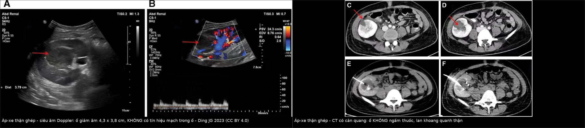
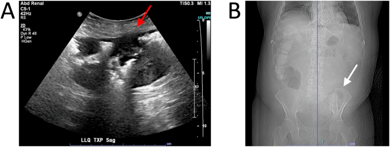
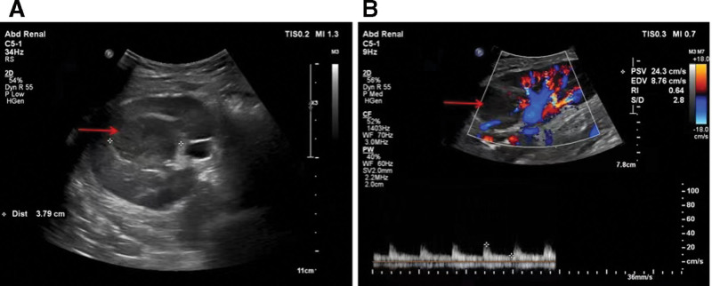

3130 — Viêm thận–bể thận cấp ở thận ghép / Acute graft pyelonephritis (AGPN)
Tags: pattern:thap-tang-am pattern:khuyet-thuoc-nhu-mo pattern:o-ap-xe pattern:khi-trong-nhu-mo pattern:than-ghep-to vung:than-ghep vung:he-nieu protocol:SA-than-ghep protocol:CT-co-can-quang protocol:MRI-DWI score:Al-Geizawi
Mức chắc chắn (certainty): tổng hợp y văn (literature synthesis) — số liệu từ 9.052 người ghép thận–tụy (PMC8998071), 939 ca ghép với 130 đợt AGPN xác nhận bằng MRI (PMC11130444), tổng quan nhiễm khuẩn niệu ở người ghép (PMC11596552), ca áp-xe thận ghép được dẫn lưu qua CT (PMC10101242), ca viêm thận–bể thận khí (EPN) ở thận ghép (PMC8085696, PMC13019114). Ngưỡng dẫn lưu ≥ 3 cm và thời gian kháng sinh là thực hành, không phải số liệu từ thử nghiệm ngẫu nhiên — ghi rõ.
Câu chốt: thận ghép mất thần kinh nên đau không điển hình, người bệnh ức chế miễn dịch nên sốt và CRP có thể mờ nhạt — vì vậy "thận ghép to, giảm âm, ứ nước nhẹ" + creatinin tăng phải được coi là AGPN cho tới khi loại trừ, và siêu âm bình thường không loại trừ được. Điểm chốt điều trị không phải tên kháng sinh mà là ổ áp-xe/khí/ứ mủ — thứ chỉ CT hoặc MRI thấy.
1. Tổng quan bệnh học – cơ chế hình ảnh
1.1 Vì sao thận ghép "dễ nhiễm và khó đọc"
- Một thận duy nhất, nằm ở hố chậu, niệu quản cắm vào bàng quang (ureteroneocystostomy) — chỗ hẹp dễ ứ, lại có trào ngược; không có thận đối bên để bù, nên mỗi đợt nhiễm đều là nguy cơ mất ghép.
- Mất thần kinh (denervation): không có phản xạ đau thành bụng kiểu thận gốc → bệnh nhân chỉ đau mơ hồ hố chậu, đau cơ thành bụng, hoặc chỉ sốt.
- Ức chế miễn dịch: sốt có thể thấp, bạch cầu không tăng, CRP tăng chậm; ngược lại nhiễm khuẩn huyết tiến triển nhanh.
- Dịch tễ: tới 74% người ghép thận có ít nhất 1 đợt nhiễm khuẩn niệu trong năm đầu (PMC11596552); AGPN tích lũy 20,9% trong 9.052 người ghép (PMC8998071).
- Hậu quả lâu dài (số liệu định lượng): AGPN muộn (> 6 tháng) tăng nguy cơ mất ghép HR 2,25 (95% CI 1,65–3,07); ≥ 3 đợt AGPN HR 2,08 (1,17–3,69) (PMC8998071). Trong 939 ca ghép, 130 đợt AGPN xác nhận MRI: thể đa ổ 73,9% vs 56,7% và hóa mủ/áp-xe 28,3% vs 11,7% (nhóm donor < 60 so với ≥ 60 tuổi); hẹp niệu quản là yếu tố nguy cơ duy nhất OR 2,9 (1,6–5,2); eGFR giảm thêm ~6 mL/phút/1,73 m² sau 1 năm (PMC11130444).
1.2 Vật lý hình ảnh: TẠI SAO viêm làm thận ghép "giảm âm, giảm ngấm thuốc"
- Siêu âm: viêm → phù nề kẽ (nước tăng) → nhu mô giảm âm, mất tương phản vỏ–tủy, thận to ra; vùng áp-xe là ổ giảm âm/trống âm, không có tín hiệu Doppler ở trung tâm (Hình 1A–B). Vì sóng âm xuyên qua ổ dịch tốt hơn mô đặc, ổ áp-xe còn làm tăng âm phía sau (through-transmission).
- CT có cản quang: vùng viêm giảm ngấm thuốc do phù kẽ + co mạch + tắc ống thận bằng mảnh tế bào → hình "thận sọc" (striated nephrogram): các dải hình nêm, giảm ngấm, xen kẽ mô lành. Áp-xe = ổ trung tâm hoại tử không ngấm thuốc (0–20 HU) + viền ngấm thuốc, có thể lan khoảng quanh thận (Hình 2C–F).
- Khí trong nhu mô (EPN): khí −1.000 HU, thấy sớm hơn trên CT so với X-quang; khí trong hệ đài–bể thận khác khí trong nhu mô — vị trí quyết định phân độ và thái độ mổ.
- MRI: ổ áp-xe hạn chế khuếch tán (DWI sáng, ADC thấp) vì mủ đặc, tế bào chết cản trở chuyển động nước; đây là lý do MRI/DWI hữu ích khi muốn tránh thuốc cản quang i-ốt hoặc khi CT không rõ.
1.3 Ngưỡng và con số phải nhớ
| Chỉ số | Con số | Nguồn |
|---|---|---|
| Nhiễm khuẩn niệu trong năm đầu sau ghép | tới 74% | PMC11596552 |
| AGPN tích lũy | 20,9% (9.052 người ghép) | PMC8998071 |
| AGPN muộn → mất ghép | HR 2,25 (1,65–3,07) | PMC8998071 |
| ≥ 3 đợt AGPN → mất ghép | HR 2,08 (1,17–3,69) | PMC8998071 |
| Hẹp niệu quản → AGPN | OR 2,9 (1,6–5,2) | PMC11130444 |
| Thể đa ổ / hóa mủ trên MRI | 73,9% / 28,3% (donor < 60 tuổi) | PMC11130444 |
| Mất chức năng thận ghép sau 1 năm | −6 mL/phút/1,73 m² eGFR | PMC11130444 |
| Khí thay nhu mô | > 50% = Al-Geizawi stage 3 | PMC13019114 |
| Áp-xe thận ghép trong ca minh hoạ | 4,3 × 3,8 cm, không có tín hiệu mạch trong ổ | PMC10101242 |
2. Mẫu hình + chẩn đoán phân biệt theo vị trí và thời gian (Gamut)
- Theo mẫu hình:
- Thận ghép to, giảm âm lan tỏa, mất phân biệt vỏ–tủy: AGPN, thải ghép cấp, hoại tử ống thận cấp (ATN), huyết khối tĩnh mạch ghép, ứ nước.
- Ổ khu trú không ngấm thuốc: áp-xe, nhồi máu hình nêm, viêm thận khu trú (lobar nephronia), u (PTLD, UTUC — bài 1750).
- Khí trong nhu mô: EPN (thường đái tháo đường, tắc nghẽn, thận ghép suy chức năng).
- Dịch quanh thận: áp-xe quanh thận, urinoma, máu tụ, lymphocele.
- Theo thời điểm sau ghép: < 1 tháng** (ATN, biến chứng mạch, rò nước tiểu), **1–6 tháng** (thải ghép cấp, BK virus, AGPN), **> 6 tháng (AGPN muộn, hẹp niệu quản, bệnh thận ghép mạn).
- Mnemonic "POST-TRANSPLANT" cho thận ghép to + sốt: Pyelonephritis, Obstruction, Stenosis mạch, Thrombosis tĩnh mạch, Tubular necrosis, Rejection, Abscess, Neoplasia (PTLD/UTUC), Surgical collection (urinoma/lymphocele), Perigraft hematoma, Lithiasis, Antibiotic toxicity, Nephrotoxicity (ức chế miễn dịch), Transplant torsion.
3. Bảng so sánh phân biệt (ma trận đối chiếu)
| Thực thể (entity) | Hình ảnh điển hình | Chốt vào (rule-in) | Chốt loại (rule-out) | Gợi ý xác nhận |
|---|---|---|---|---|
| AGPN không hóa mủ | Thận ghép to, giảm âm lan tỏa, "thận sọc" thì vỏ–cửa; viêm quanh thận nhẹ | Sốt/đau hố ghép + cấy niệu dương + hình ảnh viêm lan tỏa | Không có bất thường nhu mô và không ứ nước → vẫn không loại trừ (siêu âm nhạy kém) | Cấy máu + niệu; CT nếu nặng/không đáp ứng |
| Áp-xe thận ghép | Ổ không ngấm thuốc + viền ngấm, có thể khí, lan khoảng quanh thận; Doppler không có tín hiệu trong ổ | Sốt > 72 giờ dù kháng sinh + ổ dịch khu trú trên CT/MRI | Ổ ngấm thuốc đều, có mạch trong → nghĩ mô đặc/u, không phải áp-xe | CT có cản quang; MRI/DWI; chọc hút/dẫn lưu để cấy |
| EPN thận ghép | Khí trong nhu mô (−1.000 HU) ± mức khí–dịch; Al-Geizawi 1–3 | Khí trong nhu mô trên CT + sốc nhiễm khuẩn | Khí chỉ trong hệ đài–bể thận = stage 1, tiên lượng khác | CT; cấy máu/niệu; hội chẩn ngoại–ghép |
| Ứ mủ do hẹp niệu quản | Giãn đài–bể thận ghép, mức dịch, thành niệu quản dày; hẹp tại miệng nối | Creatinin tăng + ứ nước + sốt | Không giãn hệ đài–bể → ít nghĩ tắc nghẽn | Siêu âm + CT niệu đồ; dẫn lưu/mở thông trước |
| BKPyVAN | Thận ghép không to, có thể ổ giảm âm dưới bao, ứ nước lệch trục; không có khí | BK DNAemia cao + sinh thiết có SV40 lớn T | Cấy niệu âm, không sốt → nghiêng virus/thải ghép | PCR BK; sinh thiết (bài 3096) |
| Thải ghép cấp | Thận to, giảm âm, tăng tín hiệu T2, ngấm thuốc không đều; RI tăng | Creatinin tăng nhanh, không sốt, cấy âm; đáp ứng corticoid | Sốt + cấy dương + ổ áp-xe → nhiễm trùng | Sinh thiết; Doppler; loại trừ nhiễm |
| Nhồi máu thận ghép | Vùng hình nêm không ngấm thuốc, bờ rõ, không có mạch | Đau đột ngột + mất phổ vùng nhu mô; có thể kèm huyết khối | Ổ có viền ngấm + sốt → áp-xe | Doppler/CTA; theo dõi |
| Urinoma/lymphocele | Ổ dịch quanh thận, không viền, không khí, hình đa thùy | Creatinin dịch cao hơn huyết thanh (urinoma); không sốt | Có viền ngấm + khí + sốt → áp-xe | Chọc hút; CT thì muộn |

Trái: siêu âm Doppler — ổ giảm âm 4,3 × 3,8 cm, không có tín hiệu mạch trong ổ (mũi tên), mạch nhu mô còn (RI 0,64). Phải: CT có cản quang — ổ không ngấm thuốc lan khoảng quanh thận (C–D), đặt dẫn lưu pigtail (E–F). Ảnh ghép letterbox, giữ nguyên tỷ lệ; Ding JG 2023, CC BY 4.0.4. Protocol chụp + phân độ + ngưỡng xử trí
4.1 Chọn phương thức theo câu hỏi lâm sàng
| Câu hỏi | Phương thức đầu tay | Kỹ thuật/ngưỡng |
|---|---|---|
| Có ứ nước, có ổ dịch? | Siêu âm B-mode + Doppler tại giường | đo kích thước thận ghép, độ dày nhu mô, đài bể thận, RI; so với baseline |
| Có áp-xe/khí/hẹp niệu quản? | CT có cản quang (2 thì: động mạch + cửa) | lát 1–2 mm; đánh giá nhu mô, khoảng quanh thận, hệ đài–bể, niệu quản, mạch ghép; thêm thì muộn nếu nghi tắc |
| Nghi áp-xe mà eGFR thấp/lặp lại | MRI + DWI/ADC | ADC thấp trong ổ mủ; tránh gadolinium khi suy thận nặng |
| Không đáp ứng sau 48–72 giờ | CT/MRI lại | tìm ổ áp-xe mới, khí, tắc nghẽn, huyết khối — không đổi kháng sinh mù |
4.2 Phân độ và ngưỡng can thiệp
- AGPN đơn giản (không ổ đặc hiệu): kháng sinh theo cấy, theo dõi 48–72 giờ; 7–14 ngày tùy mức nặng (thực hành, bằng chứng ở thận ghép còn mỏng).
- Áp-xe thận ghép: dẫn lưu qua da dưới hướng dẫn CT/siêu âm khi ổ ≥ 3 cm, hoặc sốt > 72 giờ dù kháng sinh đúng, hoặc lan khoảng quanh thận; cấy dịch hút để chỉnh kháng sinh. Ca minh hoạ: ổ 4,3 × 3,8 cm, dẫn lưu pigtail + kháng sinh → hết hoàn toàn sau 1 tháng, chức năng ghép hồi phục (PMC10101242).
- EPN (Al-Geizawi): stage 1 (khí trong hệ đài–bể) — kháng sinh + dẫn lưu; stage 2 (< 50% nhu mô, viêm quanh thận hạn chế, nhiễm khuẩn kiểm soát) — dẫn lưu ± cân nhắc cắt ghép; **stage 3** (> 50% nhu mô, viêm quanh thận lan rộng, sốc/nhiều cơ quan) — thường phải cắt thận ghép (PMC13019114).
- Hẹp niệu quản/tắc nghẽn: giải áp trước (dẫn lưu qua da hoặc stent niệu quản), rồi mới xử lý hẹp (bài 3011) — vì ứ mủ dưới áp lực làm nhiễm khuẩn huyết kéo dài.
- Nguyên tắc ức chế miễn dịch: không giảm mù khi chưa biết nguyên nhân; giảm khi có bằng chứng BK/thải ghép theo phác đồ, còn nhiễm khuẩn thì điều trị kháng sinh và theo dõi chức năng ghép.
flowchart TD
A[Người ghép thận sốt và đau hố ghép, creatinin tăng] --> B[Cấy máu và nước tiểu, CRP, siêu âm Doppler thận ghép]
B --> C{Có ứ nước, ổ dịch, hay bất thường nhu mô?}
C -->|Không| D[Vẫn điều trị AGPN theo cấy, theo dõi 48-72 giờ]
C -->|Có| E[CT có cản quang 1-2 mm hoặc MRI DWI nếu eGFR thấp]
E --> F{Có khí trong nhu mô?}
F -->|Có| G[EPN: phân độ Al-Geizawi, dẫn lưu, cân nhắc cắt ghép ở stage 3]
F -->|Không| H{Có ổ không ngấm thuốc hoặc ứ mủ?}
H -->|Có| I[Dẫn lưu qua da hoặc giải áp niệu quản, cấy dịch]
H -->|Không| J[AGPN lan tỏa: kháng sinh theo cấy, theo dõi]
I --> K[Đánh giá lại sau 48-72 giờ và trước khi rút dẫn lưu]
J --> K
G --> K
D --> K
K --> L{Còn sốt hoặc chức năng xấu đi?}
L -->|Có| E
L -->|Không| M[Theo dõi dài hạn: hẹp niệu quản, tái phát, mất ghép]
5. Biến thể bình thường và cạm bẫy
- Siêu âm bình thường không loại trừ AGPN: độ nhạy của siêu âm cho viêm nhu mô thấp; sốt + cấy dương vẫn phải điều trị dù ảnh sạch.
- "Thận sọc" không đặc hiệu: gặp cả trong thải ghép, tắc nghẽn, ATN, nhiễm — phải ghép với cấy, sốt, thời điểm sau ghép.
- Dịch quanh thận sớm sau mổ là bình thường: lymphocele/máu tụ ở 2–4 tuần đầu thường không viền, không khí, không sốt; chỉ gọi áp-xe khi có viền ngấm + khí + lâm sàng.
- Khí có thể do can thiệp: sau sinh thiết, đốt, đặt dẫn lưu, mổ có thể có khí vài ngày; khí tăng lên hoặc khí trong nhu mô > 50% mới là EPN.
- Nhầm với huyết khối tĩnh mạch ghép: thận to, đau, chức năng xấu — nhưng mất phổ tĩnh mạch/đảo dòng tâm trương trên Doppler (bài 3122); điều trị khác hoàn toàn.
- DWI "sáng" chưa chắc là mủ: T2 shine-through — luôn xem ADC; ổ hoại tử/u cũng có thể hạn chế khuếch tán nhẹ.
- Đừng quên ổ thứ hai: áp-xe + hẹp niệu quản thường đi cùng (OR 2,9); giải áp xong mới đánh giá được nhu mô.
- Cắt thận ghép không phải "thất bại" muộn: ở stage 3 hoặc thận đã mất chức năng, cắt ghép sớm cứu mạng; ca thận ghép không còn chức năng vẫn có thể EPN dù đã ngừng ức chế miễn dịch (PMC13019114).
6. Tự lượng giá — Blind Quiz
Ca 1 — Người ghép thận 15 tháng, sốt 4 ngày, đau hố ghép, creatinin tăng; cấy niệu E. coli ESBL(+). Siêu âm và CT dưới đây. Chẩn đoán và bước tiếp?
- Câu hỏi: Mô tả ổ tổn thương trên siêu âm và CT. Vì sao không đủ để chỉ tăng kháng sinh? Ngưỡng nào buộc phải can thiệp?
Bấm để hiện đáp án
- Siêu âm Doppler: ổ giảm âm 4,3 × 3,8 cm, không có tín hiệu mạch trong ổ; CT có cản quang: ổ không ngấm thuốc, lan khoảng quanh thận → áp-xe thận ghép.
- Kháng sinh đơn thuần không thấm vào ổ mủ; sốt > 72 giờ dù kháng sinh đúng + ổ ≥ 3 cm là chỉ định dẫn lưu qua da và cấy dịch.
- Sau dẫn lưu: theo dõi 48–72 giờ, rút dẫn lưu khi hết dịch; tìm hẹp niệu quản đi kèm (OR 2,9).
- Nguồn: Ding JG et al., Medicine (Baltimore) 2023 (PMC10101242), CC BY 4.0.
Ca 2 — Người ghép thận, đái tháo đường, sốt và đau hố ghép; X-quang bụng và siêu âm dưới đây. Vì sao phải chụp CT ngay?

- Câu hỏi: Hai ảnh cho thấy gì? Khí này khác khí trong hệ đài–bể thận ở điểm nào và khác biệt đó đổi thái độ điều trị ra sao?
Bấm để hiện đáp án
- (A) Siêu âm: khí trong nhu mô (ổ tăng âm mạnh kèm bóng lưng bẩn, mũi tên đỏ); (B) X-quang bụng: khí ở hố chậu trái trong bóng thận ghép (mũi tên trắng).
- Khí trong nhu mô = EPN, không phải khí đường niệu; CT xác định mức thay nhu mô để phân độ Al-Geizawi — > 50% nhu mô = stage 3, thường phải cắt thận ghép.
- Phải chụp CT ngay vì X-quang/ siêu âm không đủ để phân độ và không loại trừ khí lan khoảng quanh thận.
- Nguồn: Ambinder D et al., Urol Case Rep 2021 (PMC8085696), CC BY-NC-ND 4.0 — ảnh nguyên bản.
Ca 3 — Người ghép thận sốt nhẹ, đau hố ghép; siêu âm Doppler cho ổ dưới đây. Có được kết luận ngay là áp-xe và tăng kháng sinh?

- Câu hỏi: Mô tả ổ trên siêu âm. Ba chẩn đoán phân biệt của một ổ giảm âm không có mạch? Khi nào mới được gọi là áp-xe?
Bấm để hiện đáp án
- Ổ giảm âm, bờ không đều, không có tín hiệu Doppler trong ổ — gợi ý dịch/hoại tử, nhưng không đặc hiệu.
- Ba hàng phân biệt: áp-xe, nhồi máu thận ghép hình nêm, lymphocele/urinoma/máu tụ quanh thận — cộng thêm viêm thận khu trú hoặc u.
- Chỉ gọi áp-xe khi có ổ không ngấm thuốc + viền ngấm trên CT/MRI, kèm sốt > 72 giờ hoặc cấy dịch dương; siêu âm đơn thuần không đủ — cần CT có cản quang (hoặc MRI/DWI nếu eGFR thấp).
- Đừng giảm ức chế miễn dịch mù: nếu là thải ghép cấp thì giảm thuốc = mất ghép; nếu là BKPyVAN thì mới giảm theo phác đồ (bài 3096).
- Nguồn: Ding JG et al., Medicine (Baltimore) 2023 (PMC10101242), CC BY 4.0.
Bài liên quan chéo
- 3096 – Bệnh thận do BK polyomavirus sau ghép thận
- 3011 – Biến chứng niệu quản sau ghép thận: hẹp miệng nối & rò nước tiểu
- 3122 – Huyết khối tĩnh mạch thận ghép cấp
- 1721 – Nhiễm khuẩn stent niệu quản: biofilm, rút stent ≤ 3 tuần ở thận ghép
- 1750 – UTUC ở bệnh nhân thận ghép: kẻ bắt chước "viêm thận–bể thận" và BK virus
Không dùng để chẩn đoán độc lập khi chưa có người hướng dẫn.